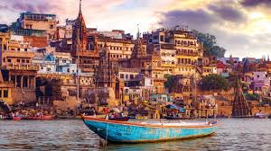
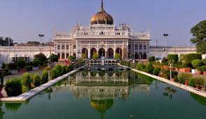
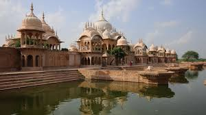
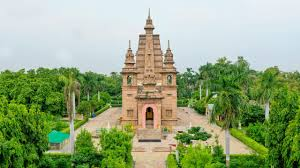

Agra

Home to the Taj Mahal, a UNESCO World Heritage Site and one of the Seven Wonders of the World, renowned for its sublime Mughal architecture. Also features the Agra Fort and Fatehpur Sikri.
Varanasi

Considered the spiritual capital of India and one of the world's oldest continuously inhabited cities. It is famous for its holy ghats along the River Ganga and its deep-rooted Hindu culture.
Lucknow

The state capital, known as the 'City of Nawabs', famous for its historical monuments like the Bara Imambara and Rumi Darwaza, and its sophisticated art, culture, and cuisine (Awadhi food).
Mathura & Vrindavan

Holy cities that are the birthplace and childhood home of Lord Krishna, featuring thousands of temples, including the famous Banke Bihari Temple.
Sarnath

A significant Buddhist pilgrimage site where Gautama Buddha first taught the Dharma (his first sermon) and where the Buddhist Sangha originated. Features the Dhamek Stupa and Ashoka Pillar ruins.